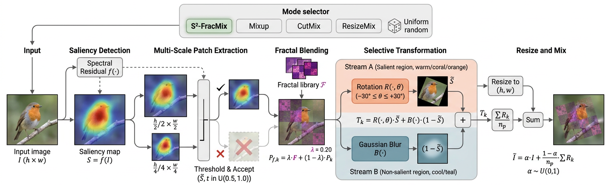

Abstract
Data augmentation is known to improve generalization of deep visual models. Recent methods favor mixup strategies that generate interpolated samples to improve model performance. However, these techniques not only incur significant computational overhead, they also lead to semantic disruption of augmentation data due to cross-sample mixing.
We first propose Self-Saliency (S²) Mixup, which constructs challenging yet label-consistent samples by extracting multi-scale salient patches and reinserting them into non-salient regions of the same image. This promotes scale-invariant feature learning while avoiding cross-sample interference. To further enhance robustness, we introduce FracMix, a mixing scheme that injects self-similarity patterns into salient regions using adaptive ratios.
Collectively, S²-FracMix enables simultaneous learning from fractal and non-fractal structures within a single image, yielding a targeted and structurally coherent augmentation strategy — establishing state-of-the-art performance across classification, robustness, calibration, detection, and transfer learning.
Method

Figure 1. Overview of S²-FracMix. Given an input image, a saliency map is computed via spectral residual. Multi-scale patches are extracted and accepted based on a saliency threshold. Accepted patches undergo fractal blending (FracMix) then selective transformation — rotation in salient regions, Gaussian blur in non-salient regions. Patches are resized and mixed back into the original image. A mode selector randomly applies S²-FracMix, Mixup, CutMix, or ResizeMix.
Self-Saliency (S²) Mixing
Computes a saliency map via spectral residual, extracts multi-scale patches from high-saliency regions, applies rotation and blurring, then reinserts them into non-salient areas of the same image.
- Two patch scales: h/2×w/2 and h/4×w/4
- Saliency threshold t ~ Uniform(0.5, 1.0)
- Rotation θ ~ Uniform(−30°, 30°)
- No cross-sample interference
FracMix Data Augmentation
Injects self-similar fractal patterns exclusively within the salient patches identified by S². Uses adaptive blending ratio λ=0.20 to increase structural complexity while preserving clean contextual background.
- Fractal injection only in salient regions
- Fixed library of pre-computed fractals
- Blending factor λ=0.20 (validated)
- Preserves semantic integrity
Results
S²-FracMix consistently outperforms all baselines across 7 benchmarks.
BibTeX
If you find S²-FracMix useful, please cite our paper:
@inproceedings{islam2026s2fracmix,
title = {S2-FracMix: Rethinking Data Augmentation via Single Saliency-Guided Mixup},
author = {Islam, Khawar and Mahmood, Arif and Jin, Xin and Akhtar, Naveed},
booktitle = {European Conference on Computer Vision (ECCV)},
year = {2026}
}